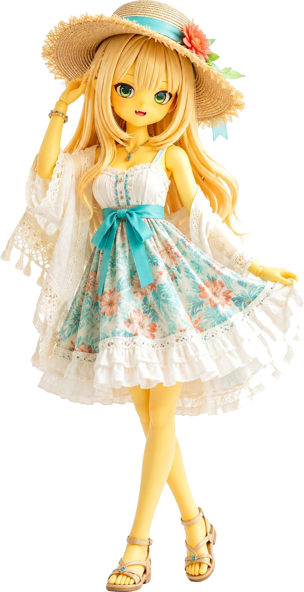
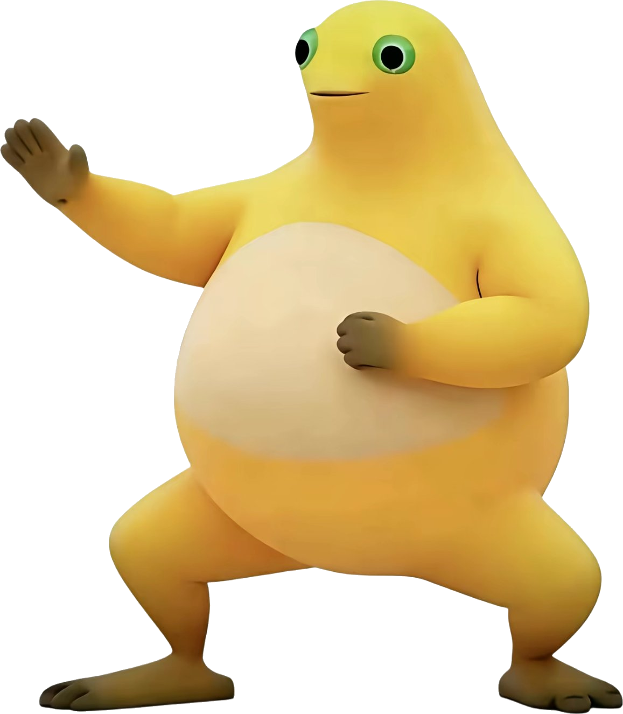
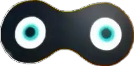

凡蛙修仙传
正在加载修仙素材…
0%
首次加载较慢，请稍候
凡蛙修仙传
— 网页复刻版 —
点击屏幕
左 / 右
侧出招（或按 ← → / A D），
按住不放可跑路
三段连招自动循环：男＝手刀→头锤→冲膝 / 女＝回旋踢→高踢→扫堂腿
打不过就跑！跑路时留意眼罩奇遇，每 5 波有 BOSS 登场
开始闯荡
选择传人
是否修炼《葵花宝典》？

修炼《葵花宝典》
奶蛙变身草帽剑姬，腿法凌厉：回旋踢→高踢→扫堂腿
攻击速度 +25%（HP 95 / 攻 40）

不修炼
奶蛙大侠保留男子汉之身：手刀→头锤→冲膝
攻击力 +15%，皮糙肉厚（HP 110 / 攻 48）

捡到一个眼罩！
戴上它，下一关你将脱胎换骨
立马戴上
进化成眼罩战神：攻击 +15%，生命上限 +20 并回满
戴上后其他眼罩全部消失
不戴上
保持当前形态，继续闯荡江湖
武功精进
选择一项强化，继续闯荡江湖
壮士陨落
再战江湖
◀
▶